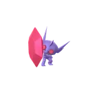
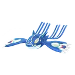
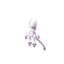
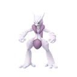
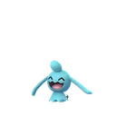
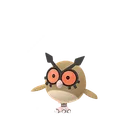
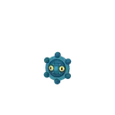

GO 對戰聯盟 · 第 28 季 · 黃昏之旅
GO 對戰聯盟賽程與盃賽排名
每一兩週換一次的盃賽，規則都不一樣：有的只開放特定屬性，有的禁用特定寶可夢，有的只能用沒進化過的寶可夢。 這頁整理本季每個時段開放的聯盟與盃賽（已換算成台灣時間），每個盃賽都有依 PvPoke 對戰模擬排序的推薦排名。
- 本季 2026/9/9（三）04:00 ～ 2026/12/2（三）05:00
- 聯盟與盃賽 14 個
- 官方公告 ↗
本季賽程（台灣時間）
官方以太平洋時間 13:00 切換；11/17→11/18 中間空一天、11/24～11/25 重疊，都是官方公告原文的日期。
- 9/9（三）04:00
～ 9/16（三）04:00星沙×4開放中超級聯盟：超級版高級聯盟：超級版大師聯盟：超級版 - 9/16（三）04:00
～ 9/23（三）04:00開放中超級聯盟高級聯盟：超級版意志力盃：超級聯盟版 - 9/23（三）04:00
～ 9/30（三）04:00星沙×4開放中高級聯盟大師聯盟：超級版復古盃：超級聯盟版 - 9/30（三）04:00
～ 10/7（三）04:00星沙×4開放中大師聯盟超級四色盃：超級聯盟版 - 10/7（三）04:00
～ 10/14（三）04:00星沙×4開放中超級聯盟：超級版高級聯盟：超級版大師聯盟：超級版 - 10/14（三）04:00
～ 10/21（三）04:00開放中超級聯盟高級聯盟：超級版小小盃 - 10/21（三）04:00
～ 10/28（三）04:00星沙×4開放中高級聯盟大師聯盟：超級版奇幻盃：超級聯盟版 - 10/28（三）04:00
～ 11/4（三）05:00星沙×4開放中大師聯盟超級萬聖節盃：超級聯盟版 - 11/4（三）05:00
～ 11/11（三）05:00星沙×4開放中超級聯盟：超級版高級聯盟：超級版大師聯盟：超級版 - 11/11（三）05:00
～ 11/18（三）05:00開放中超級聯盟高級聯盟：超級版2026 GO Championship 拉丁美洲盃 - 11/19（四）05:00
～ 11/26（四）05:00星沙×4開放中高級聯盟大師聯盟：超級版2026 GO Championship 拉丁美洲盃 - 11/25（三）05:00
～ 12/2（三）05:00星沙×4開放中大師聯盟超級速成盃：超級聯盟版
各聯盟與盃賽推薦排名
一般的超級、高級、大師聯盟，以及本季每個盃賽；點進去看參賽規則、開放時間與 Top 100 推薦寶可夢。
超級聯盟
CP 1500寶可夢 CP 必須在 1,500 以下
高級聯盟
CP 2500寶可夢 CP 必須在 2,500 以下
大師聯盟
無上限沒有 CP 上限
超級聯盟：超級版
CP 1500可以使用超級進化寶可夢（CP 超過上限時，對戰中會暫時降低等級）

超級勾魂眼高級聯盟：超級版
CP 2500可以使用超級進化寶可夢（CP 超過上限時，對戰中會暫時降低等級）
大師聯盟：超級版
無上限可以使用超級進化寶可夢

蓋歐卡（原始）
超級超夢（Y）
超級超夢（X）本季看排名 Top 100 →意志力盃：超級聯盟版
CP 1500僅限格鬥、超能力和惡屬性寶可夢參加；無法參賽：沙奈朵、索羅亞、索羅亞克
復古盃：超級聯盟版
CP 1500不可使用惡、鋼和妖精屬性寶可夢
超級四色盃：超級聯盟版
CP 1500可以使用超級進化寶可夢；僅限草、火、水和電屬性寶可夢參加
小小盃
CP 500僅限可進化並且從未進化過的寶可夢參加

小果然
咕咕
銅鏡怪本季看排名 Top 100 →奇幻盃：超級聯盟版
CP 1500僅限龍、鋼和妖精屬性寶可夢參加
超級萬聖節盃：超級聯盟版
CP 1500可以使用超級進化寶可夢；僅限蟲、毒、幽靈、惡和妖精屬性寶可夢參加
2026 GO Championship 拉丁美洲盃
CP 1500不可使用火、惡、鋼和妖精屬性寶可夢；不可使用傳說的寶可夢、幻之寶可夢和究極異獸
吞食獸超級速成盃：超級聯盟版
CP 1500可以使用超級進化寶可夢；僅限使用「黃昏之旅」賽季期間（2026/9/9 04:00～12/2 05:00，台灣時間）捕捉到的寶可夢
盃賽常見問題
盃賽和一般聯盟有什麼不同？
一般的超級、高級、大師聯盟只限制 CP；盃賽另外限制屬性、禁用特定寶可夢，或只開放某些條件的寶可夢（例如小小盃只能用未進化的寶可夢）。每個盃賽的強勢寶可夢都不一樣，所以要另外看排名。
盃賽什麼時候切換？
官方公告的時間是太平洋時間 13:00，換算台灣時間是隔天清晨：夏令時間期間是 04:00，11 月第一個週日之後是 05:00。這頁的時間都已換算成台灣時間。
「星沙 ×4」是什麼？
標示的時段，對戰勝利時拿到的星星沙子變成 4 倍（不包括每組對戰結束時的獎勵）。
排名從哪裡來？多久更新？
排名是 PvPoke 的對戰模擬結果，本站每天會多次檢查，前 100 名有變動就自動更新各盃賽頁。賽程則照官方公告整理，換季時更新。
選好要練的寶可夢了？
用 PvP IV 排名工具查你手上那隻的 IV 排第幾，以及要升到幾級、CP 多少。